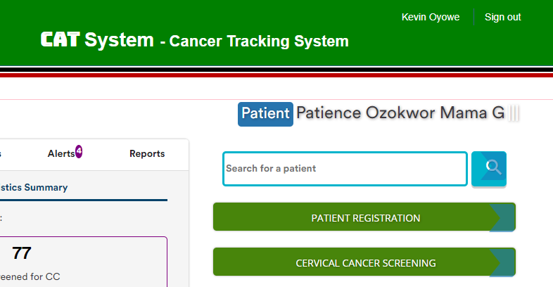
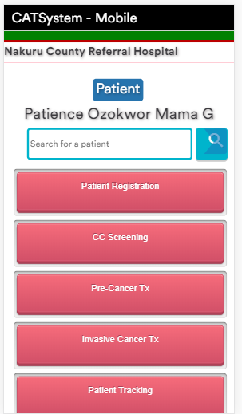
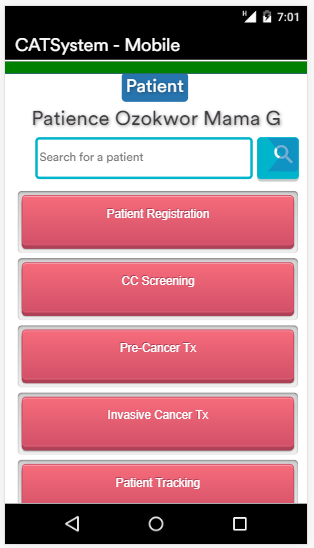

Mar 4, 2019 - Show when offline
Added a new function to indicate "You are offline" at the login screen when the system is accessed without Internet access.
Mar 3, 2019 - Patient Search and current Patient holder bars
The patient name bar will hold the [patient name] or [patient Id] of the current patient we are working on while the search bar allows you to search for another patient.


Mar 2, 2019 - Skip Loading background images when on slow network
When on a slow network, the system will skip loading of some background images in order to optimize network resources and load pages faster. This same technique is deployed when the system detects it's being used on a mobile device.
Some footer placement enhancements done to improve display of pages over different device screens.


Mar 1, 2019 - New mobile friendly buttons for mobile devices
Added new beautiful mobile buttons to be displayed only when the app is used on mobile devices. This greatly improves the mobile User Interface, thereby bringing the experience as close as possible to that of Android or IOS apps.
 